| K 文件 | Parachute_0903.k — Simplified Paracute_0828 CHUTE kg-m-s |
|---|---|
| 单位制 | kg-m-s |
| 部件 | PID 11 Para_Surf; PID 12 PARA_String; PID 14 Air |
| 计算时长 | 150.0 ms |
| 来流条件 | 恒定 220.0 m/s（Ma∞ = 0.639） |
| 流域类型 | 圆柱形外流场（结构化自动网格），下游延伸 +0.4000 m |
|---|---|
| 轴向范围 | y ∈ [-0.8996, 0.5675] m |
| 截面半径 R | 0.5000 m（设计值；K 文件原始流域半径 0.2348 m） |
| 伞衣初始折叠半径 | 0.0618 m |
| 初始阻塞比 | 1.53 %（按初始折叠半径 / 设计半径） |
| 气体参考态 | ρ0 = 1.1800 kg/m³，p0 = 100000.0 Pa，T0 = 295.2 K，c0 = 344.4 m/s，动压 q = 28556 Pa |
| 末态阻塞比 | 3.74 %（末态平均半径 0.0967 m / 设计半径） |
| 网格分辨率 | 30 × 40 × 30 |
|---|---|
| 单元 / 面 | 28640 单元，89036 面 |
| 网格尺度 | dx ≈ 0.0333 m，dy ≈ 0.0367 m，dz ≈ 0.0333 m |
| 时间积分 | 显式时间推进，CFL = 0.5，TSSFAC = 0.8，初始 dt ≈ 1.745e-06 s |
|---|---|
| 流体 | ALE Eulerian 有限体积，一阶 Rusanov 数值通量 |
| 气体状态方程 | LINEAR_POLYNOMIAL 理想气体分支 p = (c4 + c5·μ)·e_int，c4 = 0.4，e0 = 250000.0，p0 = 100000.0 Pa |
| FSI 耦合 | CLLS 罚函数：omega = 0.2，cdamp = 1.0，pfac = None，pleak = 0.1，leak_cap = None，mach_cap = 0.3，p_cap = None |
| 结构 | mass_scale = 1.0，tension_only = True，eb_frac = 0.05，eb_stab_frac = None，vent_radius = 0.02 m |
| 弯曲 / 阻尼 | bend_scale = 1.0，bend_damp = 0.0，struct_damping = 100.0 1/s，vmax 门限 = 30.0 m/s |
| 壳 / 沙漏 | THEORY = 5，BWC = 2，IHQ = 1，hg_qh = 0.1 |
| 接触 | enabled = False，scale = 1.0，vdc = None |
MID 21（FABRIC）: ro = 533.77, ea = 43090000.0, eb = 0.0, prba = 0.14, prab = 0.0, gab = 0.0, cse = 0.0, el = 0.0, prl = 0.0, lratio = 0.0, damp = 0.0, aopt = 0.0, tsrfac = 0.0, a1 = 0.0, a2 = 0.0, a3 = 0.0 | |
MID 22（PLASTIC_KINEMATIC）: ro = 462.0, e = 970000000.0, pr = 0.35, sigy = 1000000000.0, etan = 0.0, beta = 0.0 | |
MID 24（NULL）: ro = 1.18, pc = -0.001, mu = 0.001 | |
EOS 24（LINEAR_POLYNOMIAL）: eosid = 24, c0 = 0.0, c1 = 0.0, c2 = 0.0, c3 = 0.0, c4 = 0.4, c5 = 0.4, c6 = 0.0, e0 = 250000.0, v0 = 1.0 |
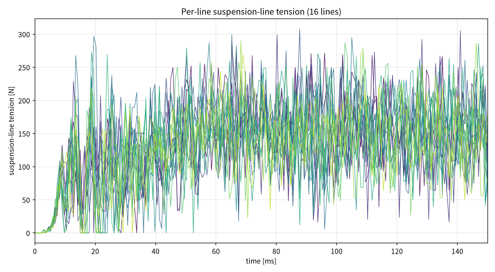
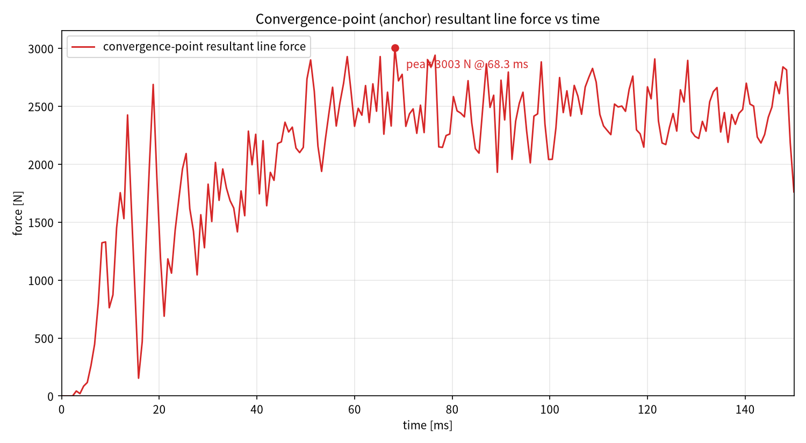
原始数据见 data/ 目录下的
.dat 文件（列：时间 ms，力 N）。
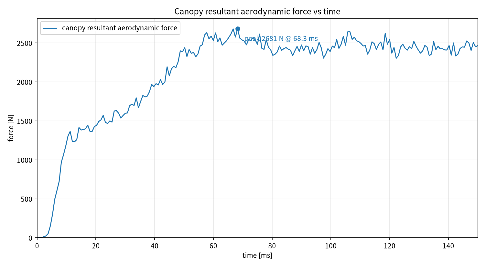
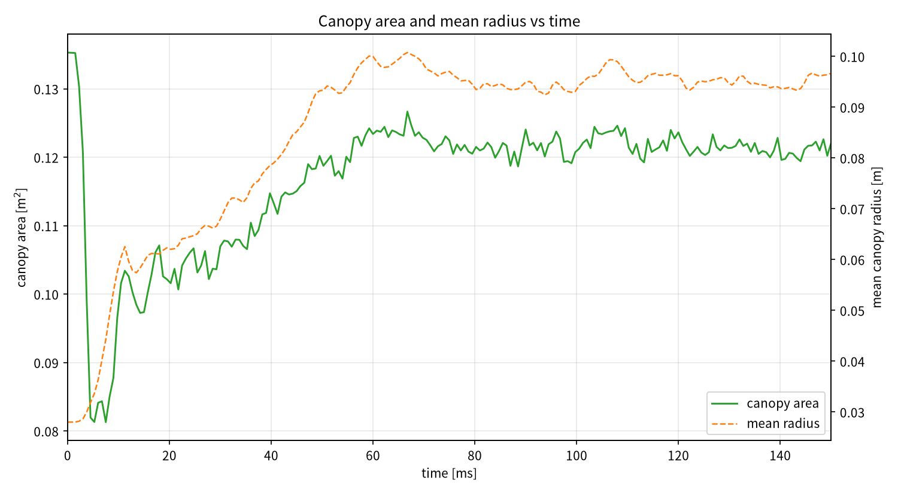
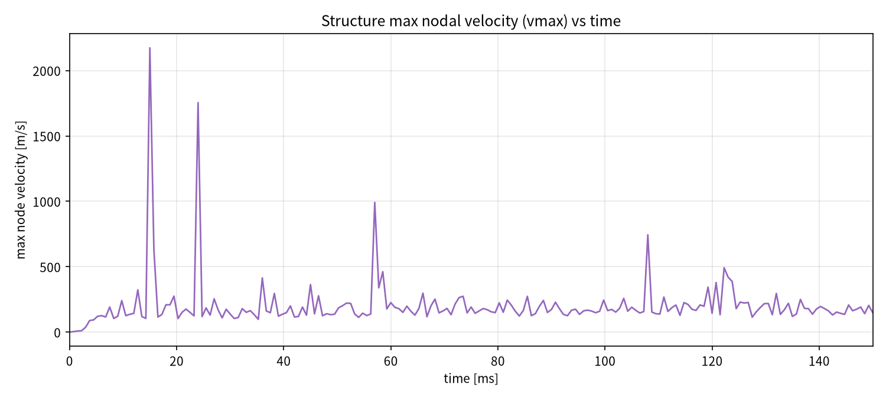
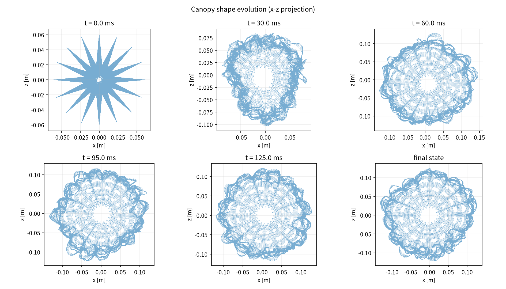
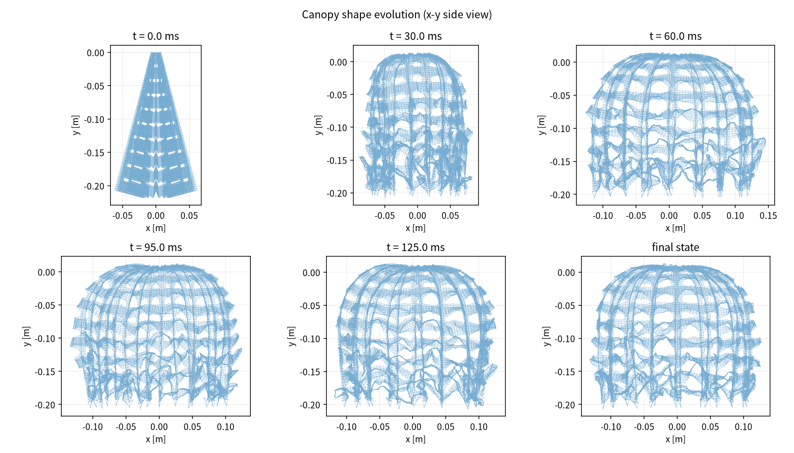
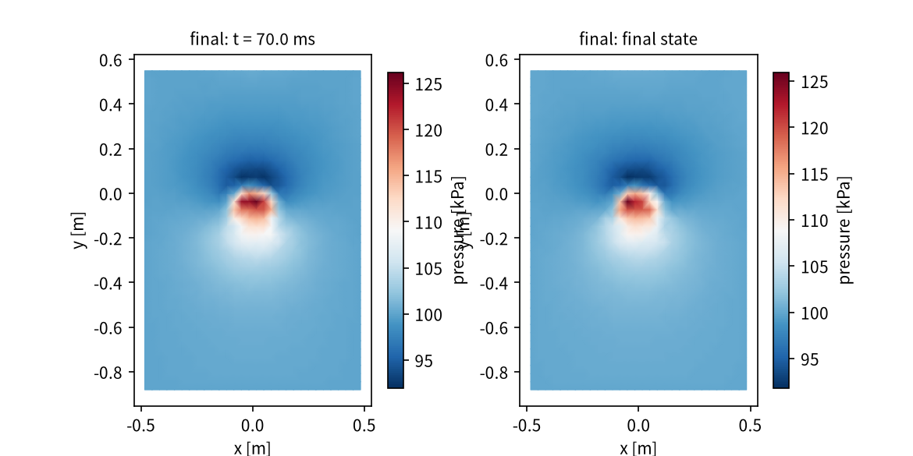
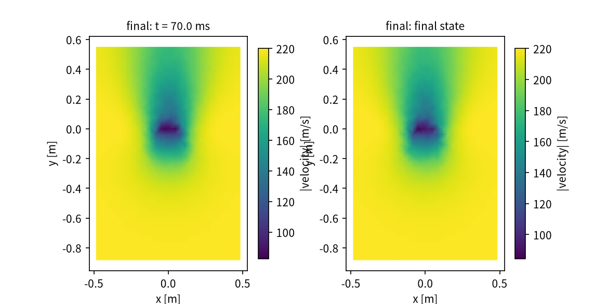
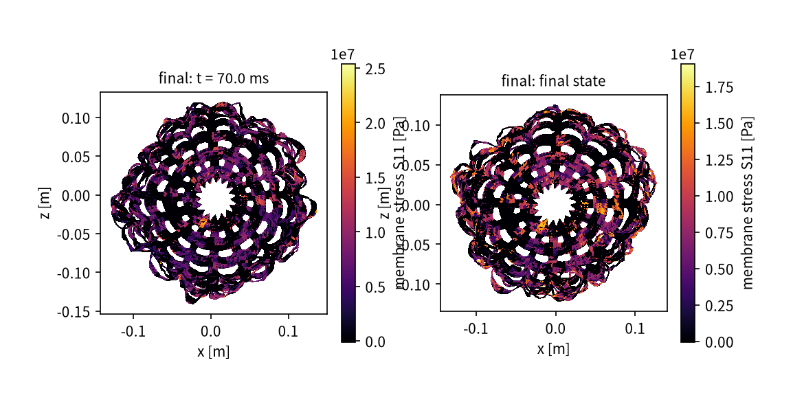
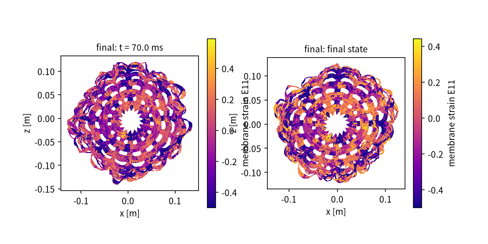
左：压力场中截面；右：伞衣张力分布，覆盖整个展开过程。
data/*.dat — 所有曲线的原始数据（空格分隔，首行为列名注释）figures/*.png — 报告中所有图片figures/canopy_inflation.mp4 — 展开过程动画history.csv — 完整时程历史line_force.csv — 逐伞绳张力时程state_*_fluid.vtk / *_structure.vtk — 各时刻流场/结构 VTKrun_meta.json — 工况/选项/CPU/用时元数据（供 --report-only 重出报告）checkpoint.npz — 断点续算检查点（--restart 恢复）